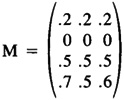

by Abraham Kandel
CRC Press, CRC Press LLC
ISBN: 084934297x Pub Date: 11/01/91
|
|
Fuzzy Expert Systems
by Abraham Kandel CRC Press, CRC Press LLC ISBN: 084934297x Pub Date: 11/01/91 |
| Previous | Table of Contents | Next |
The fuzzy Hebbian FAM M = AT o A admits no feedback error-correction and does not allow several patterns A1, . . . , Am to be superimposed in one relation. Fuzzy eigenset FAMs are projection operators: A o M2 = (A o M) o M = A o M = A. Consequently, nothing is gained by feeding the output A o M back to M. Fuzzy eigenset FAMs are “one-shot” associative memories. A natural way to store the n-sets A1, . . . , Am would be to memorize the patterns in eigenset FAMs AiT o Ai and then superimpose them by taking pointwise maxima: M = max{A1T o A1, . . . , AmT o Am}. We then require at a minimum that every stored pattern Ai recall itself: Ai o M Ai. Unfortunately M = AmaxT o Amax, where Amax is the superimposed n-set max{A1, . . . , An}. Accordingly, M maps all patterns either into Amax or some proper subset of Amax — in accordance with Theorem 1! A similar consequence befalls many other pointwise superimposition operators, including minimum.
We propose M = AT o B as an heteroassociative fuzzy eigenset subset FAM. Suppose we wish to store A = (.2 0 .5 .7) and B = (1 .5 .6) in the 4-by-3 M:

Then A o M = (.7 .5 .6) = B′ B but B o MT = A. The recall disparity arises in the forward direction (A → B) because H(A) < H(B), as is made clear in the proof of the following theorem.
Theorem 2. If M = AT o B and H(A) = H(B), then M is a fuzzy left/right eigenset subset FAM.
Proof. , provided H(A) ≥ bj for each j, i.e., provided H(A) ≥ H(B). Similarly mBoMT(xi) = ai provided H(B) ≥ H(A). Hence H(A) = H(B) guarantees perfect forward and backward recall of (A,B). If A′ ~ A, then mAoM(yj) = min( H(A ∩ A′),bj), and thus A′ o M ⊂ B whatever the height of B. Similarly, MT is a subset FAM. Q. E. D. Of course, the autoassociative FAM AT o A always satisfies H(A) = H(A). For binary sets A and B, the height can only be violated if A or B is the empty set, which is always a subset.
Theorem 2 recommends AT o B over L as the choice for R in the compositional rule of inference52,53 and for P(Y|X) in the theory of conditional possibility distributions.51 Nevertheless, M = AT o B suffers from the same problems that the autoassociator AT o A suffers from. M is not a feedback bidirectional associative memory37 and the pairs (A1,B1), . . . , (Am,Bm) cannot be reliably stored by superimposing them by pointwise maxima (minima, etc.) in .
Theorem 2 also underlies the algorithm in the first fuzzy logic VLSI chip developed at AT&T Bell Labs by Togai and Watanabe (see Chapter 18).48,49 The “inference engine on a chip” — that performs 80,000 FLIPS (fuzzy logical implications per second) — is, in fact, the world’s first VLSI heteroassociative eigenset subset FAM. The chip instantiates the compositional rule of inference and uses the logical operation min(x,y) instead of min(1,1 - x + y)! Togai55 chose this operator on the basis of extensive simulation runs because it worked and alternative operators did not.
Another recent VHSIC chip is the TRW FAM chip24 based on the TRW WAM (window addressable memory) VHSIC chip. The TRW FAM, however, is not strictly speaking fuzzy or an associative memory. It is, like the TRW CAM VHSIC chip, a metric CAM in which data vectors are addressed in parallel. Data vectors (192-bit or 96-bit words) are not distributed in the storage medium. The TRW FAM, however, allows a discrete window of partial matches of input vectors to stored vectors; thus, the “fuzzy” in FAM. The TRW FAM allows fuzzy membership functions to be approximated with hyperrectangles and trades parallel distributed storage and access for raw VHSIC processing power — up to 7.68 billion comparisons per second.
Many popular neural-net associative memories minimize fuzzy entropy as they recall stored patterns. Binary patterns are stored at some of the 2n vertices of In. An input partial pattern A′ ~ A enters the memory as some point inside In, as a fuzzy set. The networks distributed “computation” proceeds so as to drive A′ to its nearest stored neighbor A. A′ quickly travels from inside the n-cube to the nearest vertex. Consequently, such an associative memory minimizes fuzzy entropy. It disambiguates input fuzzy patterns by defuzzifying them pointwise in the direction of their nearest nonfuzzy patterns. The FAM is metric because similarity is measured by distance, usually 11 or sometimes 12. Metric FAMs are less general than subset FAMs because pattern distance in effect measures pattern subsethood and supersethood. For example, 1p metrics consist of the absolute sums:

| Previous | Table of Contents | Next |